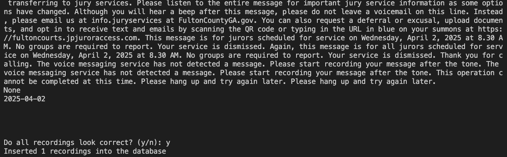

2025-04-01
A little over a year ago, I started collecting data on which groups were called in to jury duty in my county in order to estimate how likely each group is to be called in.
This was a manual process of calling the jury duty hotline, listening to the recorded message for the following day, and recording the groups that were and weren't called in. It only took a few minutes each day, but I wondered if I could find a way to automate this process (at least partially).
After some researching, I found that I could automate nearly all of this data collection process with the following tools:
Twilio's API allows lots of functionality in making calls, but for this project, we simply need to call a single number, press 1, and save a recording of the message that is played.
Twilio has its own TwiML (Twilio Markup Language) for specifying instructions on how to handle calls and what actions to perform. For this case, we specify in the twiml parameter of the client.calls.create function in the code below that we want to <Record> the call. We also specify the timeout attribute at 10 seconds - this means that if silence is encountered on the call, the recording will wait for 10 seconds of silence before terminating.
It's rare to encounter extended silence when calling the recorded jury duty message, but there were occasional cases of silence longer than the 5 second default, so extending this to 10 seconds seems to have solved the issue.
We can specify other call attributes in the arguments of the client.calls.create function: the number to call, the digits to send after making the call, and the total time limit for the call.
def make_call(client, from_number, to_number):
client = client
call = client.calls.create(
twiml='<Response><Record timeout="10"/></Response>',
from_=from_number,
to=to_number,
send_digits="1",
trim="trim-silence",
time_limit=120
# record=True, # We're already recording in the response TWIML call above, so including record here will cause duplicate recordings
)
print("Making call to jury services")
print("Waiting 6 minutes for call to take place and information to be saved by Twilio.")
# There were some cases where the price information did not seem to be saved
# in time by Twilio so will wait longer to see if this solves this issue.
time.sleep(360)
# Check if call was successful
call = client.calls(call.sid).fetch()
print(f"Call placed: {call.date_created}")
print(f"Status: {call.status}")
print(f"Duration (secs): {call.duration}")
if call.status != "completed" or int(call.duration) < 30:
print("*** Call was not completed successfully! ***")
Now that we've made the call and Twilio has saved a recording, we need to download and save it locally. I'm saving the call metadata and recording in a SQLite database.
We'll save the recording as a BLOB in the table, but in order to transcribe it via Whisper, we'll need to save a copy to an .mp3 file. We can save a temporary local file using the tempfile package in Python, which was new to me. It saves the recording to a local temporary mp3 file for use in transcribing, before later deleting the file.
The code is checking for all new recordings available on Twilio that we haven't previously saved - unique calls are indicated by the recording SID generated by Twilio. Any new calls are saved to the local database.
We download the recording of the call from Twilio, transcribe it to text with the OpenAI whisper package, and then use the OpenAI API to extract the jury duty date and group status from the transcription text.
There is one part of this process that isn't fully automated. After transcribing the call and using an LLM to extract the jury date and group status, I print both to the console so that I can review them manually to ensure everything has occurred accurately. If I wasn't doing this while running the code, I would still want to do this at some point in reviewing the data to make sure the LLM pulled the correct data from the transcription. So far the process is working very accurately, so perhaps eventually I'll get to the point where I trust it fully, but for now I'll continue to have a human in the loop.
This is what the accuracy check looks like - it prints the transcript and the LLM results and asks for confirmation on whether to add to the database table. In this case, no groups are called, so None is returned instead of group CSV data:

def save_recordings(db_path, openai_api_key):
print("Saving recordings")
# SQLite connection
conn = sqlite3.connect(db_path)
cursor = conn.cursor()
# Get all recordings from Twilio
all_recordings = client.recordings.list()
# Get list of existing recording IDs so we don't spend time trying to re-download them
previously_downloaded_recordings = cursor.execute("select recording_sid from recordings;").fetchall()
previously_downloaded_recordings = [recording[0] for recording in previously_downloaded_recordings] # Convert row tuples to list of strings
# Remove any recordings that have already been downloaded
new_recordings = [recording for recording in all_recordings if recording.sid not in previously_downloaded_recordings]
print(f"Total recordings on Twilio: {len(all_recordings)}")
print(f"New recordings to process: {len(new_recordings)}")
if len(new_recordings) == 0:
print("No new recordings to process")
return
# Load whisper model for transcribing audio recording
whisper_model = whisper.load_model("medium.en")
data_to_insert = []
for recording in new_recordings:
# Get the recording
recording_mp3 = requests.get(recording.media_url, auth=(account_sid, auth_token)).content
try:
# Create a temporary file to store the MP3
with tempfile.NamedTemporaryFile(suffix='.mp3', delete=False) as temp_file:
temp_file.write(recording_mp3)
temp_file_path = temp_file.name
# Transcribe recording with whisper
transcription = whisper_model.transcribe(temp_file_path, fp16=False)["text"]
# Extract jury duty group data from transcription
extracted_jury_duty_data = extract_group_data(transcription, openai_api_key)
jury_duty_date = extracted_jury_duty_data[0]
jury_duty_group_csv = extracted_jury_duty_data[1]
# Gather all fields that we want to save to the database
# Twilio gives datetime objects; convert to ISO strings
record = (
recording.sid,
recording.date_created.isoformat(),
recording.date_updated.isoformat(),
recording.duration,
float(recording.price),
recording.price_unit,
recording.start_time.isoformat(),
recording.status,
recording_mp3, # Actual recording MP3 data we'll save in BLOB format
transcription, # Transcribed recording text
jury_duty_group_csv,
jury_duty_date,
recording.call_sid,
recording.account_sid,
recording.conference_sid,
recording.channels,
recording.source,
recording.error_code,
recording.uri,
json.dumps(recording.encryption_details) if recording.encryption_details else None,
json.dumps(recording.subresource_uris) if recording.subresource_uris else None,
recording.media_url,
recording.api_version
)
data_to_insert.append(record)
print(f"Recording {recording.sid} processed")
finally:
# Delete the temporary file
os.unlink(temp_file_path)
# Print new recordings to confirm they look correct
print("\n\n----- New recordings -----")
print("Review to confirm group data looks correct\n")
for new_recording in data_to_insert:
print(new_recording[0])
print(new_recording[1])
print(new_recording[9])
print(new_recording[10])
print(new_recording[11])
print("\n\n\n")
# Get user input to confirm all recordings look correct before loading into database
user_input = input("Do all recordings look correct? (y/n): ").lower()
if user_input == "n":
print("Recordings don't look correct. \nExiting with nothing saved to the database")
return
insert_query = """
-- INSERT OR IGNORE will insert any new records but ignore any that already exist
INSERT OR IGNORE INTO recordings (
recording_sid,
date_created,
date_updated,
duration,
price,
price_unit,
start_time,
status,
recording,
recording_transcription,
jury_duty_group_csv,
jury_duty_date,
call_sid,
account_sid,
conference_sid,
channels,
source,
error_code,
uri,
encryption_details,
subresource_uris,
media_url,
api_version
) VALUES (?, ?, ?, ?, ?, ?, ?, ?, ?, ?, ?, ?, ?, ?, ?, ?, ?, ?, ?, ?, ?, ?, ?)
"""
try:
cursor.executemany(insert_query, data_to_insert)
conn.commit()
# cursor.rowcount is the number of records inserted
print(f"Inserted {cursor.rowcount} recordings into the database")
except Exception as e:
print(f"Some inserts failed: {e}")
conn.rollback()
finally:
conn.close()
In September 2022, OpenAI released Whisper, a tool for language detection and transcription.
In the code above, we're using Whisper's English-only medium-sized model. We know these recordings will only be in English. I didn't test the accuracy of Whisper's different-sized models on the recording, I opted for the largest English-only model - it performs well and does not take too long to process.
Originally, I was using Twilio's own transcription product - they will transcribe the call recording for a small fee (10 cents per recording for my calls). Surprisingly, the free, open-source whisper package from OpenAI performed significantly better. It handled some unusual recording text much better than Twilio. In Twilio's defense, they are likely prioritizing speed and minimal cost versus accuracy. Given that I'm only running this at most 5 times a week, I'm prioritizing accuracy instead of speed.
Twilio handles their transcriptions as separate objects with their own metadata, so I was initially saving all transcriptions into a separate table in my SQLite database. But the switch to handling transcriptions locally with whisper greatly simplifies this, I now only need an extra column in my recordings table to store the transcription.
Here are transcription examples comparing Twilio and Whisper:
Twilio:
Transferring to jerry services, Please listen to this entire message for important gerry, surface information as some options have changed. Although you will hear a beep after this message, do not leave a voice mail as we are unable to retrieve those at this time. Instead, please email us at info dot G services at fulton County, ga dot gov. You can also request a deferral or excusal, upload documents, an opt in to receive text, an e mails by scanning the q r code or typing in the you are url in blue on your summons at fulton course, dot j peacher access dot com. This message is for jurors scheduled for march 24th 2025. At 8 30 AM groups one through 4. You must report groups 5 through 9. You are not required to report groups 5 to 9. Your service is dismissed and there's nothing further you need to do. Scripts one to 4 must report at 8 30 AM to the jury assembly room located on the 7th floor of the justice center tower. At 185 central avenue, Southwest atlanta, Georgia, 30303. Please complete your online questionnaire before you report for your service. By scanning the q r code on your stomach. Re parking is provided for jurors at the red and yellow, lots of the at 593 central avenue, Southwest atlanta, Georgia, 30312 to re services does not validate paid parking. You see your parking pass included with your summons or visit fulton court dot org for directions and parking information. There is a free fulton County shuttle service that will bring you to the justice center tower from the red and the yellow parking lot. Jurors using mazda should go to w W. W dot, it's smarter, dot com for more information. Again, this message is for jury scheduled for service date. March 24th 2025 at 8 30 AM groups one through 4.
Whisper:
Please listen to this entire message for important jury service information as some options have changed. Although you will hear a beep after this message, do not leave a voicemail as we are unable to retrieve those at this time. Instead, please email us at info.juryservices.foldencountyga.gov. You can also request a deferral or excusal, upload documents, and opt in to receive texts and emails by scanning the QR code or typing in the URL in blue on your summons at foldencourse.jpjuroraccess.com. This message is for jurors scheduled for March 24, 2025 at 830 a.m. Groups 1 through 4, you must report. Groups 5 through 9, you are not required to report. Groups 5 through 9, your service is dismissed and there's nothing further you need to do. Groups 1 through 4 must report at 830 a.m. to the jury assembly room located on the seventh floor of the Justice Center Tower at 185 Central Avenue SW Atlanta, GA 30303. Please complete your online questionnaire before you report for your service by scanning the QR code on your summons. Free parking is provided for jurors at the Red and Yellow Lots at 593 Central Avenue SW Atlanta, GA 30312. Jury services does not validate paid parking. Please see your parking pass included with your summons or visit foldencourt.org for directions and parking information. There is a free Fulton County Shuttle Service that will bring you to the Justice Center Tower from the Red and Yellow parking lots. Jurors using MARTA should go to www.itsmarta.com for more information. Again, this message is for jurors scheduled for service date March 24, 2025 at 830 a.m. Groups 1 through 4, you must report.
Now that we have the transcription text of the recording, we need to extract the date of jury duty and which groups were called in, if any. The recording script is similar each day, but slightly different in how they outline which groups are called in. This is a nice use-case for an LLM to interpret the transcription, extract the information we need, and format it properly.
I initially tried to use a local LLM from Hugging Face, like Llama-3.2-3B-Instruct, but I had difficulty getting it to correctly pull out the information, and it wouldn't always format the output consistently. Admittedly I am new to working with local LLMs, so please reach out if you think this should be an easy task for a model like Llama-3.2-3B-Instruct.
I was able to get consistent, accurate results using the gpt-4o-mini model from OpenAI, which is also quite inexpensive at just 15 cents per 1M input tokens and 60 cents per 1M output tokens.
I'm making two calls to the API, one to extract just the date, and one to extract the group information formatted as a CSV. If no groups are called or it's not possible to determine which groups were both called in and not called in, then the LLM just returns nothing (hence why we need to separately pull the date regardless of the group status).
I specify in the instructions multiple times that the CSV output should be in ascending order by group number. Occasionally the model would still output CSV data in different order - likely because the recordings often list groups out of order ("group 2 you must report, groups 1, 3, and 4 through 12, you do not need to report"). In order to have consistent ordering, I use pandas to make sure the CSV output from the model is sorted before returning. This just helps with doing manual confirmation checks of the data.
While I use mainstream LLMs all the time for regular work, this is my first time using them programmatically where I need specific, accurate results. So I welcome any feedback if this prompt can be improved or made more efficient.
def extract_group_data(transcript, openai_api_key):
# Connect to OpenAI API
client = OpenAI(api_key=openai_api_key)
# Get the date of the jury duty
instructions = """
You are an AI assistant extracting information from transcripts of an
automated recording about jury duty assignments.
Please extract the date of jury duty in YYYY-MM-DD format.
Return just the date in YYYY-MM-DD format only and don't include
anything else.
"""
# Call the OpenAI API to process the transcript
response = client.responses.create(
model="gpt-4o-mini",
instructions=instructions,
input=transcript
)
# Save and print initial output
jury_duty_date = response.output_text
# Get the status for each jury duty group in CSV format
instructions = """
You are an AI assistant extracting information from transcripts of an
automated recording about jury duty assignments.
Please extract the following:
1. The date of the jury duty in YYYY-MM-DD format.
2. Which groups need to come in for jury duty.
3. Which groups do not need to come in for jury duty.
Format the data in CSV format with the date, group number and status.
The group numbers should be in ascending order and the status should be
1 if the group needs to come in and 0 if the group does not need to come
in:
2024-01-17,1,1
2024-01-17,2,1
2024-01-17,3,1
2024-01-17,4,1
2024-01-17,5,0
2024-01-17,6,0
2024-01-17,7,0
Read carefully to check which groups are required to come in (marked as
1) and which groups are excused (marked as 0).
Include only the CSV data output without the header line. Don't include
backticks or extra text.
Make sure the groups are ordered in ascending order by group number.
If the transcript does not specify all groups that were called, then
don't return anything. For example, if it says "Groups 1, 2, and 3 need
to come in", but it doesn't specify which groups don't need to come in,
then don't return anything.
Similarly, if the transcript says that no groups are required to come in
and it doesn't specify which groups, then don't return anything.
"""
# Call the OpenAI API to process the transcript
response = client.responses.create(
model="gpt-4o-mini",
instructions=instructions,
input=transcript
)
jury_duty_group_csv_data = response.output_text
# print("OpenAI output:")
# print(output)
# If no groups are called, the LLM should return nothing, so just return None in that case.
if jury_duty_group_csv_data == "":
jury_duty_group_csv_data = None
return (jury_duty_date, jury_duty_group_csv_data)
# Sometimes the API does not return the results sorted by group number
# Try to convert to Pandas DataFrame and sort by group number so that output is consistently sorted
try:
df = pd.read_csv(io.StringIO(jury_duty_group_csv_data), header=None, names=["date", "group_num", "called"])
df.sort_values(by="group_num", inplace=True)
return (jury_duty_date, df.to_csv(index=False, header=False))
except:
return (jury_duty_date, jury_duty_group_csv_data)
This was an awesome project to stretch what I thought was possible. Automating this data collection was something that I initially thought would be very difficult or impossible due to the unstructured nature of the recording, but it was surprisingly doable with a little hard work!
Here's a link to the full code on GitHub.
For next steps, I would like to explore further cleaning up and trimming down the transcription so that the LLM process is cheaper, more efficient, and more accurate. It would also be interesting to compare the different-sized Whisper models to see how well each performs on the transcription.